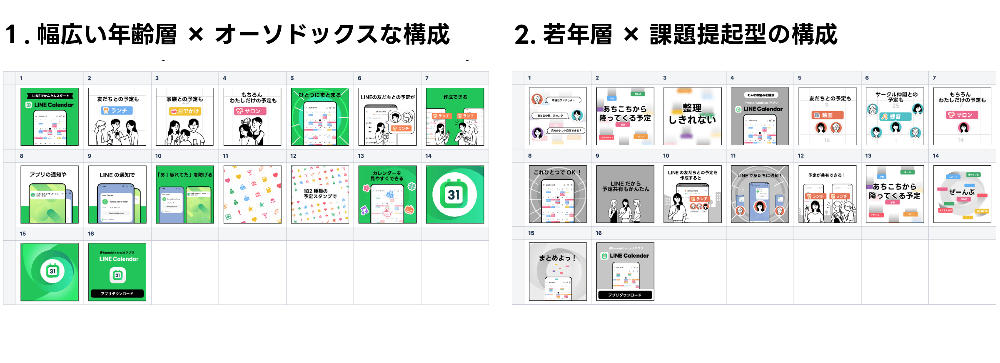
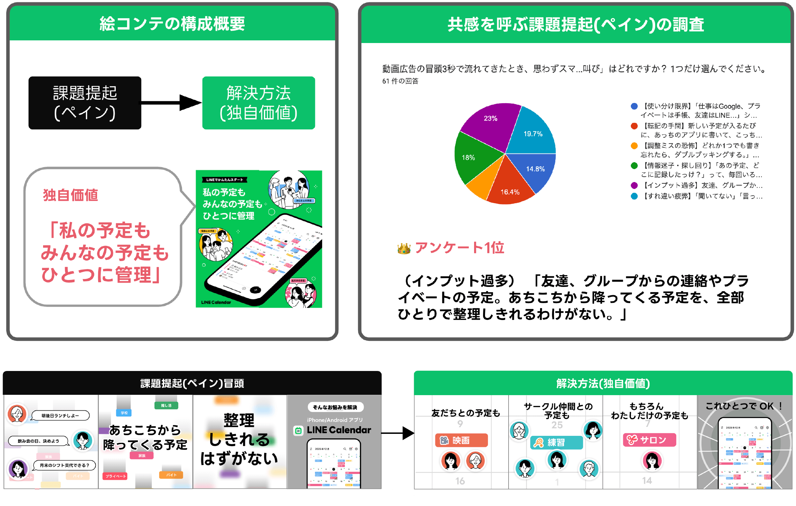
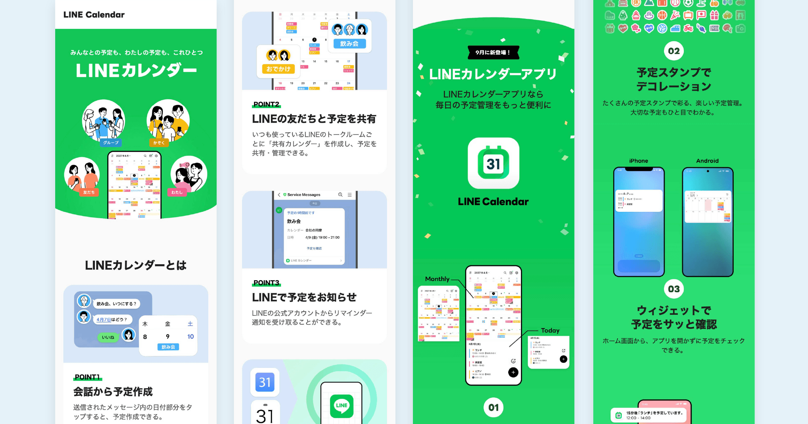
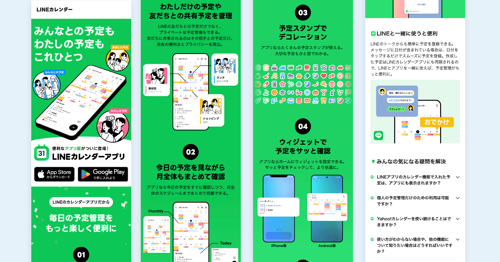

【後編】本当の困難はここからだった。世界観の崩壊を防ぎ、ステークホルダーと合意形成した話〜LINEカレンダーアプリのBX設計の舞台裏〜
世界観の崩壊を防ぐ——動画クリエイティブの自主的な巻き取りと戦略的ディレクション
ストアのデザインを定義している最中、外部出稿の企画担当者からプロモーション動画制作の話が持ち上がった。
「制作会社に外注したいから、構成の骨子を確認してくれないか？」
しかし、上がってきた構成案を見て、私は強い危機感を覚えた。
そこに描かれていたのは、AIで生成したような“野良ブランド”的な世界観だった。メッセージの軸も、POやプロダクトデザイナーを交えて綿密に検討しているコアバリューとは乖離していたのだ。
もちろん、それ自体は無理もないことだった。企画担当者は複数プロダクトのプロモーションを横断し、契約を取りまとめる立場だ。何より、当時のデザイナー側としても「このデザインや訴求メッセージでいこう」と提示できる確定デザインの定義途中の状態だったからだ。
とはいえ、チャネルによってデザインやメッセージがチグハグになってしまった場合、動画を見たユーザーがストアやLPに流れ着いたとき、
——「あれ？ さっき見た動画とこのアプリ、本当に同じものなのだろうか？」
そんな致命的な違和感を抱かせるわけにはいかない。ブランドの体験価値の一貫性を損なわせるわけにはいかないのだ。
私は即座に、「動画の絵コンテ制作、私にやらせていただけないでしょうか？」と手を挙げた。
ストーリーラインの論理的整合性を貫く
動画は、異なる層にアプローチする2パターンを制作することにした。
- LINEでつながる幅広い年齢層の男女に向けた構成 × オーソドックスな訴求
- コアとなる20代幹事属性の女性に向けた構成 × 課題提起型の訴求

特に後者の「課題提起型の構成」には、こだわり抜いた。
——「ユーザーの本当のペイン（悩み）は何か？」から始まり、「それをどう解決するのかというソリューションの提案」へと繋げるストーリーラインである。
ここで最も重要視したのは、「ストーリーの論理的整合性」だった。
我々にしか提供できない独自のソリューションは、「LINEの友だちとつながることで、予定の共有や管理が圧倒的にスムーズになる」という点に尽きる。したがって、導入で提示するペインも、そのソリューションと完全に辻褄が合うものでなければならない。
もしここでペインを「予定をついつい忘れてしまう」にしてしまうと、解決策は単なる「リマインダーやプッシュ通知」になってしまい、他社製カレンダーアプリでも代替可能な機能訴求に落ちてしまう。それでは、LINEの友だちとつながるというこのプロダクト独自の存在意義（他社との決定的な差別化）に繋がらなくなってしまうのだ。
この一貫したストーリーラインにこだわり抜き、課題提起となるペインのコピーを極限まで研ぎ澄ませた。さらに、どの言葉が最もターゲットの共感を呼ぶのか社内アンケート調査を実施し、生のデータをベースに細部まで磨き上げた。
結果——
「あちこちから降ってくる予定、整理しきれるわけがない」
だから、
「友だちとの予定も、グループとの予定も、家族との予定も、私だけの予定も、全部まとめよう」
これによって、LINEカレンダーだからこそ提供できる独自価値へと繋がるストーリーラインとして結実したのだ。
絵コンテの作成後は、映像を形にするためのビジュアル素材の制作、BGMのテイストの提言に至るまで、制作会社との緻密な連携と監修を一貫して完遂した。

LP制作における経営層の要望整理と技術的制約
最後に待ち受けていたのは、プロダクトのLP（ランディングページ）制作だった。しかし、ここにも大きな困難が待ち受けていた。というか、本当の意味での「混沌」はここからだった——。
経営層から下りてきたオーダーは、次のようなものだった。 ——「LINEアプリ内のミニアプリ版カレンダーと、今回の新規単体アプリ版を統合したLPにしてほしい。2週間後の会議でプレゼンできるよう、動く形にして用意してくれ」
補足すると、LINEアプリ内のミニアプリと、今回私たちが立ち上げている単体アプリ版は、社内でも開発組織が全く異なる別のプロダクトである。他組織との調整を含めれば、情報設計（IA）の確定だけでも合意形成が必要であり、時間がかかる。スケジュール的にも物理的ハードルが極めて高かった。
経営層の真意にあるのは「シナジーの最大化」だ。それは理解できる。しかし、LPで2つのプロダクトを無理に同等に扱ってしまえば、新しくリリースするアプリ単体版のメッセージが弱まり、最も重要なコンバージョンである「アプリのダウンロード（CVR）」が阻害されるリスクがあった。
とはいえ、オーダーに対し「統合すると、本来の目的であるアプリ単体版を最も強く訴求することが難しくなる」と説明する機会は得られない。機会があったとしても、具体化して見せなければ、何が問題なのか納得できないはずだ。
「まずは経営層の要望に忠実に則ったLPを、一度本気でカタチにしてみよう」
私はあえて経営層のオーダー通りの構成で、動くプロトタイプを期限内に制作し、会議の場で提示した。

初期案のLINE内のミニアプリ版＋単体アプリ版の統合型LP
結果は一目瞭然だった。実物の画面を目の当たりにした経営層自身から、「これでは肝心のアプリの情報がシンプルに入ってこない」という言葉が漏れたのだ。具体的な形にしたからこそ、「これはなしだ」という共通認識が生まれた瞬間だった。
最終的には、本来の主役である「単体アプリ版」を前面に据え、ミニアプリ版カレンダーは補足として寄り添わせるという、CVRと両プロダクトの訴求バランスが両立する塩梅へと着地させた。

決定案のシンプルな構成の単体アプリ版LP
プラットフォームの制約をハックする
もう一つの大きな関門となったのが、社内で開発されたページビルダー「LandPress」というプラットフォーム（以下、PF）の存在だった。
LINEのサービスでシンプルなLPを立ち上げる際、このPFを使用することが条件だったが、これがデザイナー泣かせの代物だった。
まず、使用できるデザイン用のUIコンポーネントがあらかじめ固定されており、今回のLPデザインに最適なパーツが存在しない。かといって、カスタムコードで独自にHTML/CSSを実装しようとすれば、PFの仕様としてページ全体にデフォルトで適用されるCSSやScriptとコンフリクトを起こしたり、将来的なPF側の仕様変更で不具合を起こすリスクを孕んでいた。
だからこそ私は、PFのUIコンポーネントごとのレスポンシブ仕様や挙動を調査した。表現の制約の中で最も適合するパーツを決め、「制限があること」を前提とした上で、ビジュアルデザインのクオリティを追求した。
期限が刻一刻と迫る極限の状況の中、
- 「「経営層の要求をあえて一度カタチにして、課題に気づいてもらうファシリテーション」
- 「制限の厳しいPF仕様をクリアしつつ、関係者全員が納得するデザインに着地」
この二重の関門を、私はなんとか突破した。
完成したLPはプロダクトチームの（特にコアターゲットに近い若い女性）メンバーから好評だ。10月中旬の記者発表会にて大体的に披露されることになっている。
結び
コンセプトの言語化というゼロからの土台作りから、ストアデザインの定義、自ら描き起こしたイラストアセットの展開、徹底的にロジックを詰めた動画の絵コンテディレクション、そしてステークホルダーを巻き込んだLPの構造再設計まで。
これらの行動の根本にあるのは、「ユーザー体験の一貫性を保ち、プロダクトの本質的な提供価値を正しく定義して、すべてのチャネルでの表現の辻褄を合わせる」ということへの、私個人の強いこだわりだ。そして何より、プロダクトデザインチームが心血を注いで作り上げたアプリだからこそ、その価値を一人でも多くのユーザーへ届け、ダウンロードを最大化したいという強い想いがあったからに他ならない。
どれほど優れたプロダクトを作っても、手前の動画やストア、LPでのコミュニケーションにわずかでも矛盾や歪みがあれば、ユーザーの体験価値は途切れてしまう。
プロダクトが持つ本当の価値を、途切れさせることなく真っ直ぐにユーザーへ届けること——。
その「ユーザーの体験文脈に表現を合致させる」ことこそが、ものづくりにおける私の一番のこだわりなのだ。